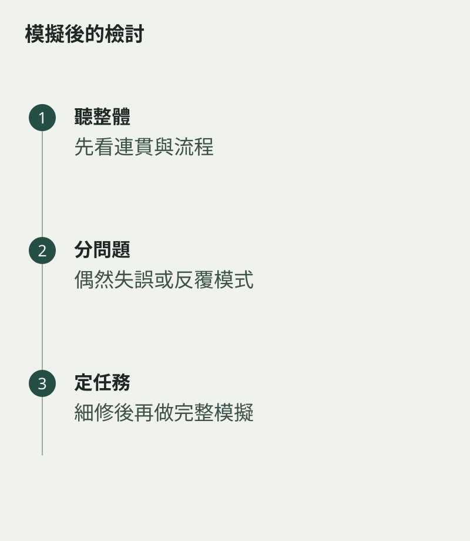

模擬考完成，最容易記住那個明顯錯音，其他表現反而模糊。回看時可以先把問題分成兩類：偶然出現的小失誤，以及在練習和模擬中反覆發生的模式。兩者都值得留意，但準備時間不一定平均分配。
先聽完整一次，記下整體是否連貫，速度、音色與曲間安排是否穩定。然後才回到具體位置，避免一開始就把演奏剪成無數錯誤。
找出重複的情境
例如每次換曲後第一句容易急，或高音前總提前吸氣。這些現象可能跨越不同作品，值得優先處理。只修某一個音，而沒有看共同原因，問題可能換個地方再出現。
偶然失誤則可檢查是否已有清楚的恢復方式。真正演奏時，小錯之後仍能保留拍子與樂句，也是需要練習的能力。

下一次模擬有明確任務
選一兩項最重要的改善，先在日常練習中處理，再做下一次完整模擬。不要每天都重做全套，卻沒有時間修正中間發現的事情。
回看也要記錄做得穩的部分，讓準備不是一直追着不足走。模擬考的作用，是讓正式流程變熟悉，並提供可用證據；模擬考的目的是替接下來的練習指出較清楚的方向，不宜當成提前宣判的結果。